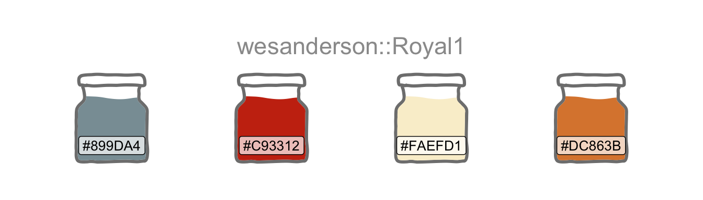
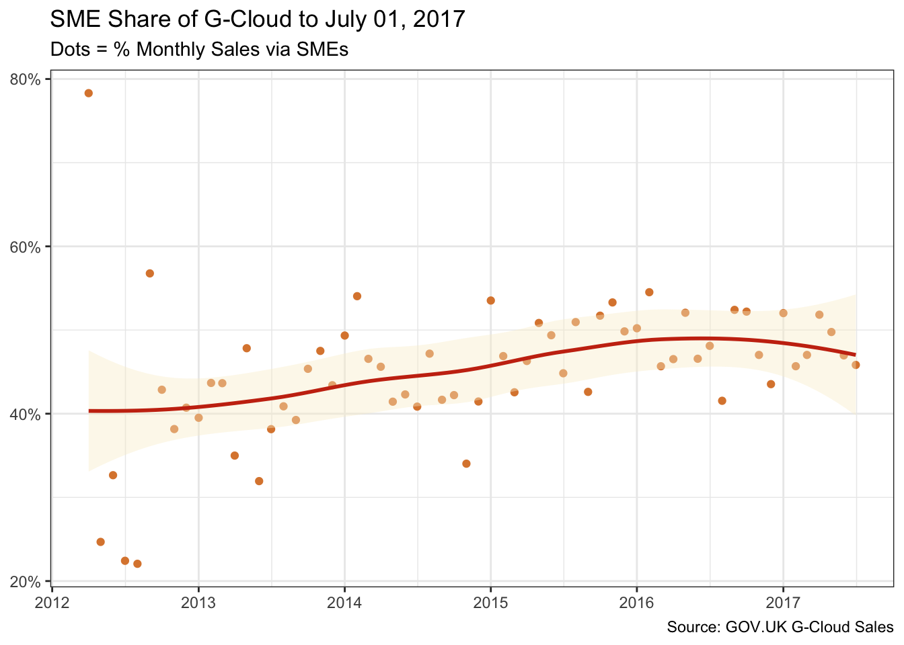
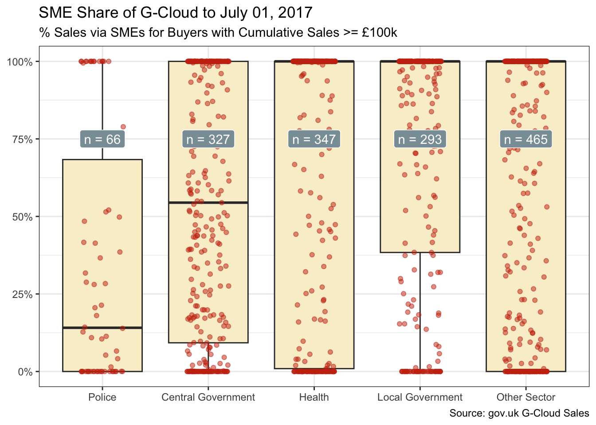

Let’s Jitter

Welcome to the tidyverse (Wickham et al. 2019) with data ingestion, cleaning and tidying. And some visualisations of sales data with a little jittering.
This first little project uses the tidyverse collection of packages to import, explore and visualise some sales data. The UK Government’s Digital Marketplace provides a rich and varied source of public data under the Open Government Licence 1.
The marketplace was set up with an intent to break down barriers that impede Small and Medium Enterprises (SMEs) from bidding for Public Sector contracts. So, let’s see how that’s going.
theme_set(theme_bw())
(cols <- wes_palette("Royal1"))
The tidyverse framework sits at the heart of all my data science work as evidenced in my favourite things. So I’ll begin by using two of my most used tidyverse packages (readr (Wickham, Hester, and Bryan 2022) and dplyr (Wickham et al. 2022)) to import and tidy the cloud services (G-Cloud) sales data.
Wild data are often scruffy affairs. Cleaning and tidying is a necessary first step. In the case of these data, there are characters in an otherwise numeric spend column. And the date column is a mix of two formats.
url <- str_c(
"https://www.gov.uk/government/",
"uploads/system/uploads/attachment_data/",
"file/639799/g-cloud-sales-figures-july2017.csv"
)
gcloud_df <-
read_csv(url) |>
clean_names() |>
mutate(
evidenced_spend = str_remove_all(evidenced_spend, "[^0-9-]") |>
parse_number(),
date = as.Date(as.numeric(return_month), origin = "1899-12-30"),
date = if_else(
is.na(date),
date_parse(return_month, format = "%d/%m/%y"),
date
),
sme_status = if_else(sme_status == "SME", "SME", "Non-SME"),
sme_spend = if_else(sme_status == "SME", evidenced_spend, 0)
)Now we can summarise and visualise how the SME share has changed over time using the ggplot2 package.
share_df <- gcloud_df |>
group_by(date) |>
summarise(
evidenced_spend = sum(evidenced_spend, na.rm = TRUE),
sme_spend = sum(sme_spend, na.rm = TRUE),
pct = sme_spend / evidenced_spend
)
last_date <- gcloud_df |>
arrange(desc(date)) |>
slice(1) |>
pull(date) |>
date_format(format = "%B %d, %Y")
share_df |>
ggplot(aes(date, pct)) +
geom_point(colour = cols[4]) +
geom_smooth(colour = cols[2], fill = cols[3]) +
scale_y_continuous(labels = label_percent()) +
scale_x_date(date_breaks = "years", date_labels = "%Y") +
labs(
x = NULL, y = NULL,
title = glue("SME Share of G-Cloud to {last_date}"),
subtitle = "Dots = % Monthly Sales via SMEs",
caption = "Source: GOV.UK G-Cloud Sales"
)
Sales grew steadily to a cumulative £2.4B by July 2017. And as the volume of sales grew, an increasingly clearer picture of sustained growth in the SME share emerged. However, in those latter few months, SMEs lost a little ground.
Dig a little deeper, and one can also see variation by sub-sector. And that’s after setting aside those buyers with cumulative G-Cloud spend below £100k, where large enterprise suppliers are less inclined to compete.
sector_df <- gcloud_df |>
mutate(sector = if_else(
sector %in% c("Central Government", "Local Government", "Police", "Health"),
sector,
"Other Sector"
)) |>
group_by(customer_name, sector) |>
summarise(
evidenced_spend = sum(evidenced_spend, na.rm = TRUE),
sme_spend = sum(sme_spend, na.rm = TRUE),
pct = sme_spend / evidenced_spend
) |>
filter(evidenced_spend >= 100000) |>
group_by(sector) |>
mutate(median_pct = median(pct)) |>
ungroup() |>
mutate(sector = fct_reorder(sector, median_pct))
n_df <- sector_df |> group_by(sector) |> summarise(n = n())
sector_df |>
ggplot(aes(sector, pct)) +
geom_boxplot(outlier.shape = FALSE, fill = cols[3]) +
geom_jitter(width = 0.2, alpha = 0.5, colour = cols[2]) +
geom_label(aes(y = .75, label = glue("n = {n}")),
data = n_df,
fill = cols[1], colour = "white"
) +
scale_y_continuous(labels = label_percent()) +
labs(
x = NULL, y = NULL,
title = glue("SME Share of G-Cloud to {last_date}"),
subtitle = "% Sales via SMEs for Buyers with Cumulative Sales >= £100k",
caption = "Source: gov.uk G-Cloud Sales"
)
The box plot, overlaid with jittered points to avoid over-plotting, shows:
- Central government, with its big-spending departments, and police favouring large suppliers. This may reflect, among other things, their ability to scale.
- Local government and health, in contrast, favouring SMEs. And this despite their looser tether to central government strategy.
So, irrespective of whether service integration is taken in-house or handled by a service integrator, large enterprise suppliers have much to offer:
- The ability to deliver at scale;
- A breadth and depth of capabilities exploitable during discovery to better articulate the “art of the possible”;
- A re-assurance that there is always extensive capability on hand.
SMEs offer flexibility, fresh thinking and broader competition, often deploying their resources and building their mission around a narrower focus. They tend to do one thing, or a few things, exceptionally well.
These data are explored further in Six months later and Can Ravens Forecast.
R Toolbox
Summarising below the packages and functions used in this post enables me to separately create a toolbox visualisation summarising the usage of packages and functions across all posts.
| Package | Function |
|---|---|
| base | as.Date[1]; as.numeric[1]; c[1]; conflicts[1]; cumsum[1]; function[1]; is.na[1]; search[1]; sum[5] |
| clock | date_format[1]; date_parse[1] |
| dplyr | filter[6]; arrange[3]; desc[3]; group_by[5]; if_else[7]; mutate[8]; n[1]; pull[1]; slice[1]; summarise[4]; ungroup[1] |
| forcats | fct_reorder[1] |
| ggplot2 | aes[3]; geom_boxplot[1]; geom_jitter[1]; geom_label[1]; geom_point[1]; geom_smooth[1]; ggplot[2]; labs[2]; scale_x_date[1]; scale_y_continuous[2]; theme_bw[1]; theme_set[1] |
| glue | glue[3] |
| janitor | clean_names[1] |
| purrr | map[1]; map2_dfr[1]; possibly[1]; set_names[1] |
| readr | parse_number[1]; read_csv[1]; read_lines[1] |
| scales | label_percent[2] |
| stats | median[1] |
| stringr | str_c[6]; str_count[1]; str_detect[2]; str_remove[2]; str_remove_all[2]; str_starts[1] |
| tibble | as_tibble[1]; tibble[2]; enframe[1] |
| tidyr | unnest[1] |
| wesanderson | wes_palette[1] |
References
Footnotes
Contains public sector information licensed under the Open Government Licence v3.0.↩︎